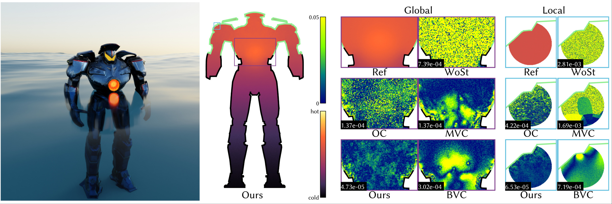

Gradient Domain Reconstruction for Monte Carlo PDE Solvers
1Tsinghua University 2University of Illinois Urbana-Champaign
ACM Transactions on Graphics (SIGGRAPH) 2026
SIGGRAPH 2026 Technical Papers Honorable Mention Award

Abstract
Grid-free Monte Carlo methods are capable of solving Poisson equations on highly complex domains. However, existing methods operate solely in the primal domain and can converge slowly due to high variance. Inspired by gradient-domain rendering, we introduce a gradient-domain framework for Poisson problems. Specifically, we devise a new Monte Carlo estimator that directly targets differences of the solution between spatially varying query locations. Further, we adopt state-of-the-art reconstruction techniques originated in gradient-domain rendering to allow efficient reconstruction of the solutions without incurring additional bias. We demonstrate the effectiveness of our technique by comparing solutions obtained using our method and several state-of-the-art baselines.
BibTeX
@article{wu2026gradient,
author = {Wu, Jiaqi and Hu, Xuejun and Zhao, Shuang and Xu, Kun},
title = {Gradient Domain Reconstruction for Monte Carlo PDE Solvers},
journal = {ACM Transactions on Graphics},
volume = {45},
number = {4},
articleno = {130},
numpages = {11},
year = {2026},
month = {July},
doi = {10.1145/3811295},
publisher = {Association for Computing Machinery}
}